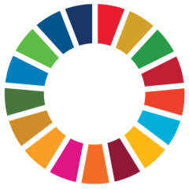
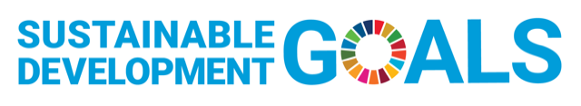

導入事例

最新事例
- [2025.12. お知らせ] 徳島県教育委員会「徳島と世界をつなぐグローカルリーダー育成事業」に採択され、徳島北高校とインドネシアをつなぐプログラムを開始
- [2025.01. プレスリリース] AirPangaea、HR高等学院にアジア周遊型の国際教育プログラムを提供 - 年間5カ国との異文化交流で次世代のグローバル人材を育成
- [2023.11. プレスリリース] AirPangaeaが西大和学園中学校・高等学校に国際交流プラットフォームを提供、インドネシアへの海外探究プログラムのための事前オンライン交流を実施
- [2023.09. プレスリリース] 明星中学校・高等学校が当社のインドネシア国際交流プログラムを導入 ～非英語圏の生徒同士で学びあう新しい国際教育～
オンライン国際交流TOMODACHIプログラム
-
徳島県立徳島北高等学校MA Pembangunan UIN Jakarta
徳島県教育委員会「徳島と世界をつなぐグローカルリーダー育成事業」として、徳島県立徳島北高等学校の2クラスとインドネシア・ジャカルタの高校をつなぎ、5ヶ月間のオンライン交流TOMODACHIプログラムを実施した記録。
-
西大和学園中学校・高等学校SMA Labschool Kebayoran
西大和学園中学校・高等学校のインドネシアへの海外探究プログラムに先立ち、訪問先であるジャカルタの SMA Labschool Kebayoran の生徒と事前オンライン交流を実施。オンラインで築いたつながりが、現地での再会とペア作りに引き継がれました。

オンラインSDGs国際協働学習MOTTAINAI プログラム

-
明星中学校・高等学校 (東京)SMAN 1 Padang (インドネシア)
企画協力
日本とインドネシアの計72名の高校生が6週間にわたりオンライン協働学習を実施。異国のクラスを繋ぎ、授業時間を活用して、異文化交流、天然資源の保全に関する議論を行いました。英語を第二言語とする近隣諸国の同世代同士が、互いに刺激を受けながら地球の将来に思いを馳せる機会となりました。
-
成蹊中学・高等学校/ 武蔵高等学校中学校 (東京)Bina Bangsa School (インドネシア)
企画協力
日本とインドネシアの計16名の中高生が6週間、オンライン協働学習を実施しました。放課後の時間を活用し3つの異国混成グループに分かれて、異文化交流及び天然資源の保全に関して議論。予定していた日程以外にも自主的に打ち合わせを行うなど全グループが本気で課題に取り組んだ思い出に残るプログラムとなりました。
-
成蹊中学・高等学校 (東京)Bina Bangsa School (インドネシア)
企画協力
日本とインドネシアの計10名の高校生が6週間にわたりオンライン協働学習を実施。放課後の時間を活用し2つの異国混成グループに分かれて、異文化交流及び天然資源の保全に関する議論を行いました。最終日には両グループとも校長含めた先生方や専門家ゲストに向けて素晴らしい発表を行うことができました。
-
Nguyen Chi Thanh Gifted High School (ベトナム)Mapúa University Senior High School (フィリピン)
ベトナムとフィリピンの高校の英語クラブの生徒計41名が6週間のオンライン協働学習を実施。6グループに分かれて、異文化交流及び天然資源の保全に関する議論を行いました。両クラブ代表の提案でプレゼンをコンペティション形式に変更するなど、更に楽しいプログラムにする示唆ももらえる取り組みとなりました。
生徒たちの声
相手国/地域への関心の高まり
感じた親近感
- 国が違っても共通の趣味があり親近感を覚えた
- 相手が日本のことをよく知ってくれていた。
- 何気ない話をしていく中で、彼らの日本への愛がとても伝わってきた。遠い国の人に愛される国に住んでいるというのはとても嬉しい。
- 日本のことが好きで、日本の良さについて語ってくれることもあり、日本人として誇らしかったです。
同世代との交流
- 他国の同世代の人と話したことはあまりなかったため、思わぬ発見があったり、今まで遠いただの国だったのが、少し近づいた気がする。
- インドネシアという国に知り合いがいるというだけで、とてもこの国に興味が湧き、また、いつか訪れて見たいと感じた。
- インドネシアは今までただの東南アジアの国という認識であったが、関わりのある国として認識できるようになった。
英語学習モチベーション向上
得られた自信
- 思いのほかうまく話せて楽しかった
- 英語で話すことへの抵抗が減った
- 自分の話す英語がちゃんと相手に伝えられるようになってよかった。
悔しい気持ち
- 思ったより英語が口から出てこなかった
- 相手との英語力の差を感じた
- 会話が続かず難しかった
- 思っていたよりも相手国の英語力が高く、逆に日本人側はもっともっと英語力を向上させていかないと対等に話し合えないということを知った。
前向きな刺激
- 英語のスピーキングの重要性がわかった
- 英語に対する意識が高まった
- 初めて英語が母国語でない人と会話したが相手の英語力や積極性に刺激を受けてもっと頑張らなければいけないなと思った
- 発音や単語の繋ぎ方が全然違った。
- 海外の人と話す機会ができ、自分の英語力を再確認できた。また、自分の英語がいかに実用的なものになっていないのかを実感できた。
地球規模の課題への関心向上
- 直面する環境問題が両国で似ていた。
- 今まで環境問題やMottainai行動については日本での暮らしを中心に考えていました。しかし相手校の生徒と話していくうちに、国ごと、そして地域ごとの様々な事情を考えながらこれらの問題に取り組まないといけないことを学びました。
- 環境問題に関して、両国で事情が全く違うことに気がつくことができました。例えば道で売られているストリートフードでプラスチックを使わざるを得ない状況などは初めて知ることができました。
海外生の声（原文ママ）
- Opened up my mind more with bright talented students around the world, learn language and cultural differences.
- I enjoyed talking with the Japanese students more than I expected. It was interesting to be friends with people from other country.
- It was definitely a new experience for me. I’ve never had the opportunity to talk to other students my age from another country, so it was very exciting. However I do feel disappointed with my performance for the final presentation, I feel I could have done better but I suppose we learn and grow. Aside from that, this program was very fun and had me looking forward to Wednesdays. Definitely would love another opportunity to do it again!
- I earned a lot of valuable lessons from this program. I learned how to work together efficiently with my team members and learned to have an open mind, listening to the different practices and perspectives of students from Japan.
- I’ve earned an experience that I would probably not get elsewhere, to talk with the Japanese students as if we are not thousands of kilometers away. I was also able to learn a lot about my presentation topic, Solar Panels and Solar Energy. Moreover, this program was a great platform for me to improve my collaboration skills.
- Thankful for AirPangaea for giving us the opportunity to participate in this program. It went well and the facilitators are really nice and welcoming!
- I learned a lot. It broadened my perspective on other countries and I'm more motivated to engage in international activities such as this.
- I feel grateful to have learned many things during the program. To think of different ways to apply the Japanese philosophy of Mottainai, I feel enlightened to share my wisdom to other people and relate this to my daily life.
- I just realized through this program about fossil fuels and their relationship with electricity. It's an eye opener.
- I realized that I am not good in English as I have thought before. It motivated me to improve my English speaking skills.
- Needless to say, the program was impressive to everyone and maybe the most important thing is that you created an amazing playground for us. Nothing needs changing or improving, congrats!
- I'm just happy and grateful for providing us this opportunity and connection to know more about other cultures and collaborate with other students from a different country. I also really like the topic you gave us, which is Mottainai, because it is relevant and significant in today's society. I am very satisfied with the program. Please continue to democratize cross-cultural experience in school education. :)